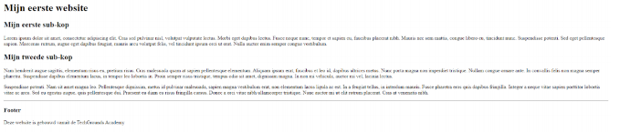

Horizontal rule - HTML (Week 1)
We willen nu een footer toevoegen onderaan onze pagina. Onderzoek hoe een
horizontal rule werkt en start aan de onderstaande opdracht.

16.Voeg een Horizontal rule toe en reproduceer het volgende resultaat.
Mijn eerste website
Miijn eerste sub kop1
Paragraaf 1
Mijn subkop 2
Paragraaf 2
End
Paragraaf 3